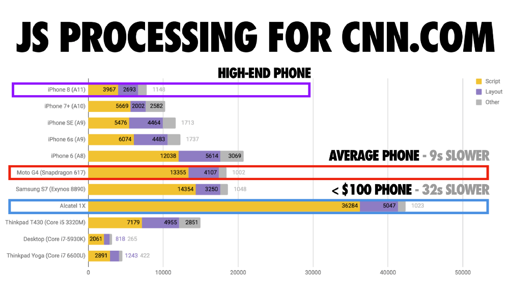
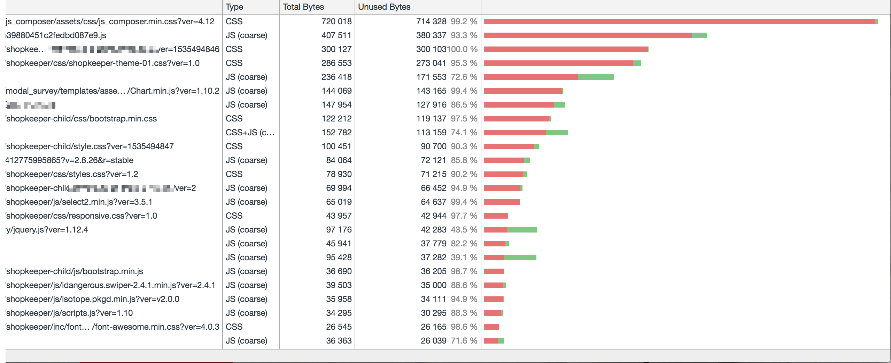

# Keep your site simple, and it will be fast! Gabor Javorszky A lead dev at Mindsize, freelancer > I break sites, so I can put them together better. > - me <small>slides at https://wctw.j7y.co</small>
## The Request Life Cycle™ 1) HTTP GET to /some/url
## The Request Life Cycle™ 2) server does "stuff"
## The Request Life Cycle™ 3) HTTP response, hopefully a 200
## The Request Life Cycle™ 4) browser parses the received content (your html) <img src="pix/someofthosewords.webp" alt="">
## The Request Life Cycle™ 5) includes css / js (`deferred`, `async`)
## The Request Life Cycle™ 6) then parses those css / js files <img src="pix/inflate.gif" alt="">
## The Request Life Cycle™ 7) which may also include additional files...
## The Request Life Cycle™ 8) repeat 5-7 until you run out of things to include
# All of those can slow done Each
# DNS <blockquote class="twitter-tweet" data-lang="en"><p lang="en" dir="ltr">It's not DNS<br>There's no way it's DNS<br>It was DNS<br><br>-- A troubleshooting haiku<a href="https://t.co/brgEflxBRB">https://t.co/brgEflxBRB</a></p>— Ryan Scott Brown (@ryan_sb) <a href="https://twitter.com/ryan_sb/status/763454371518611457?ref_src=twsrc%5Etfw">August 10, 2016</a></blockquote> <script async src="https://platform.twitter.com/widgets.js" charset="utf-8"></script>
# Server
This is your site with few plugins installed Photo by Robert Murray on Unsplash
This is your site with 89 plugins and 4 themes (one of which is Divi) Photo by Raul Taciu on Unsplash
## Javascript is expensive  <small>The Cost of Javascript in 2018 - https://medium.com/@addyosmani/the-cost-of-javascript-in-2018-7d8950fbb5d4</small>
## Unused JS is more expensive  <small>Actual client's site as of 6pm on 6th Sept</small>
## Fonts / CSS * FOUC (flash of unstyled content) * popups. so. many. popups. :( * things moving under your mouse, so you "misclick/tap"
## Fight for the user Questions to ask:
> Do you really need all 4 custom fonts from typekit? All of the glyphs? Sure you can't get by with Times New Roman / Arial?
> Do you really need to load that fancy frontend framework to display what's on your site? (React, Vue, Angular, Ember, etc)
> Do you really to track users across 9 different services? (Google Analytics, mixpanel, snapchat, bing, yahoo, facebook)
# Bonus question > How much do you respect their privacy?
> Do you really need all of the plugins you're currently using? Can some of those be broken out into a tiny utility plugin instead? Are some of those unnecessary? Are you only using a tiny part of a larger plugin? (Looking at you, jetpack!)
> Do you need a full blown pagebuilder? Can you instead design your pages so they're more static?
> Do you need a javascript based a/b testing? Could you do server side template based a/b testing instead?
> Do you need to load assets from various different places? Can some of them be placed on your server / your CDN instead?
> Do you need a starter theme that does EVERYTHING?! Divi and Avada are my top 2 "I'm not touching that" themes.
> Are you using plugins that were written with performance in mind? There are ~some~ lots that haven't... Like, LOTS... it's astounding.
> Did you test your site on a low end Android device? For less than £100, you can buy a sim free android device. Consider it a design expense for your company.
> Do you need those huge images? Did you resize them for web size? AND optimized them? (tinypng et al will help here)
> Do you need that animated svg art style? The parallax background? Think of the CPU cycles!
> Did you leave a css framework in your css file(s)? It's easy to leave the full bootstrap boilerplate in. You probably don't need most.
> How much of your CSS / JS is unused? Because you're undoing / rewriting parts.
(this page has been intentionally left blank)
Open floor / Q&A after pizza / refreshments.